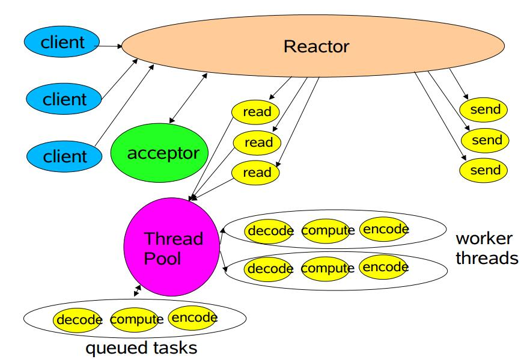

发现自己写显得多余了，前辈已经写的很好了。
http://www.jasongj.com/java/nio_reactor/
只是总结下服务器从阻塞到非阻塞的演变过程，代码和图片是借用上面的博客。
阻塞服务器
单线程阻塞的服务器
服务器接受请求到读写数据都在单一的线程下完成。
单线程accept请求多线程处理请求的阻塞服务器
为每个接受的请求都开启新的线程执行
这里可以改进下，就是使用线程池来代替每次来一个请求就创建一个线程来造成过多线程上下文切换的开销，和创建销毁线程的开销。
到这里阻塞的服务器就到此结束了，为什么说是服务器是阻塞的，因为serverSocket的accept（）、socket的read()和write（）方法都是阻塞的。
Reactor服务器
这里有一个Selector来监听通道Channel的状态，如果Channel数据已经准备好的话，Selector是可以获取到相应的注册事件，然后获得相应的Channel,然后通过Channel来执行相应的动作获取数据。
单线程的Reactor
首先看看其流程图：
可以看到，从Seletor注册Channel到监听事件并处理事件都是一个线程来完成。
工作流线程Reactor

而工作流线程则对其进行了改造，对其读写事件使用线程池来去操作，分担了一部分压力。但是其事件的监听还是由主线程来完成。
Multi-Reactor
这里是分主Reactor和从Reactor，继续分担主Reactor的压力，主Reactor只是负责接收请求，然后把SocketChannel提交给了子Reactor来做读写操作，这里的读写操作都由子Reactor来操作，进一步的改造则是可以使用线程池来对读操作分离出来。